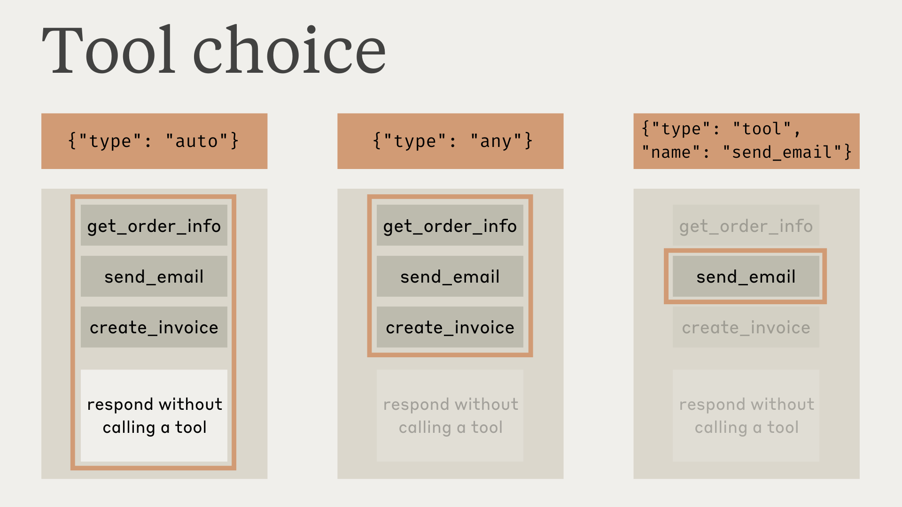

Loading...
Loading...
Loading...
Loading...
Loading...
Loading...
Loading...
Loading...
Loading...
Loading...
Loading...
Loading...
Loading...
Loading...
Loading...
Loading...
我们建议对复杂工具和模糊查询使用最新的 Claude Sonnet (4.5) 或 Claude Opus (4.1) 模型；它们能更好地处理多个工具并在需要时寻求澄清。
对于直接的工具使用 Claude Haiku 模型，但请注意它们可能会推断缺失的参数。
如果使用 Claude 进行工具使用和扩展思考，请参考我们的指南 此处 了解更多信息。
客户端工具（包括 Anthropic 定义的和用户定义的）在 API 请求的 tools 顶级参数中指定。每个工具定义包括：
| Parameter | Description |
|---|---|
name | 工具的名称。必须匹配正则表达式 ^[a-zA-Z0-9_-]{1,64}$。 |
description | 工具功能、何时使用以及如何表现的详细纯文本描述。 |
input_schema | 定义工具预期参数的 JSON Schema 对象。 |
input_examples | （可选，测试版）示例输入对象数组，帮助 Claude 理解如何使用工具。参见 提供工具使用示例。 |
当你使用 tools 参数调用 Claude API 时，我们从工具定义、工具配置和任何用户指定的系统提示构造一个特殊的系统提示。构造的提示旨在指示模型使用指定的工具并为工具的正常运行提供必要的上下文：
In this environment you have access to a set of tools you can use to answer the user's question.
{{ FORMATTING INSTRUCTIONS }}
String and scalar parameters should be specified as is, while lists and objects should use JSON format. Note that spaces for string values are not stripped. The output is not expected to be valid XML and is parsed with regular expressions.
Here are the functions available in JSONSchema format:
{{ TOOL DEFINITIONS IN JSON SCHEMA }}
{{ USER SYSTEM PROMPT }}
{{ TOOL CONFIGURATION }}为了从使用工具的 Claude 中获得最佳性能，请遵循以下指南：
input_examples。 清晰的描述最重要，但对于具有复杂输入、嵌套对象或格式敏感参数的工具，你可以使用 input_examples 字段（测试版）来提供经过模式验证的示例。详见 提供工具使用示例。好的描述清楚地解释了工具的功能、何时使用、返回的数据以及 ticker 参数的含义。不佳的描述太简洁，让 Claude 对工具的行为和使用方式有许多疑问。
你可以提供具体的有效工具输入示例，帮助 Claude 更有效地理解如何使用你的工具。这对于具有嵌套对象、可选参数或格式敏感输入的复杂工具特别有用。
工具使用示例是一个测试版功能。为你的提供商包含适当的 测试版标头：
| Provider | Beta header | Supported models |
|---|---|---|
| Claude API, Microsoft Foundry | advanced-tool-use-2025-11-20 | All models |
| Vertex AI, Amazon Bedrock | tool-examples-2025-10-29 | Claude Opus 4.5 only |
向你的工具定义添加一个可选的 input_examples 字段，包含示例输入对象数组。每个示例必须根据工具的 input_schema 有效：
示例包含在提示中，与你的工具模式一起，向 Claude 展示格式良好的工具调用的具体模式。这帮助 Claude 理解何时包含可选参数、使用什么格式以及如何构造复杂输入。
input_schema 有效。无效的示例返回 400 错误工具运行器为使用 Claude 执行工具提供了开箱即用的解决方案。工具运行器不是手动处理工具调用、工具结果和对话管理，而是自动：
我们建议你对大多数工具使用实现使用工具运行器。
工具运行器目前处于测试版，可在 Python、TypeScript 和 Ruby SDK 中使用。
使用压缩的自动上下文管理
工具运行器支持自动 压缩，当令牌使用超过阈值时生成摘要。这允许长时间运行的代理任务继续超过上下文窗口限制。
SDK 工具运行器处于测试版。本文档的其余部分涵盖手动工具实现。
在某些情况下，你可能希望 Claude 使用特定工具来回答用户的问题，即使 Claude 认为它可以在不使用工具的情况下提供答案。你可以通过在 tool_choice 字段中指定工具来执行此操作，如下所示：
tool_choice = {"type": "tool", "name": "get_weather"}使用 tool_choice 参数时，我们有四个可能的选项：
auto 允许 Claude 决定是否调用任何提供的工具。这是提供 tools 时的默认值。any 告诉 Claude 它必须使用提供的工具之一，但不强制特定工具。tool 允许我们强制 Claude 始终使用特定工具。none 防止 Claude 使用任何工具。这是未提供 tools 时的默认值。使用 提示缓存 时，对 tool_choice 参数的更改将使缓存的消息块失效。工具定义和系统提示保持缓存，但消息内容必须重新处理。
此图说明了每个选项的工作方式：

请注意，当你有 tool_choice 为 any 或 tool 时，我们将预填充助手消息以强制使用工具。这意味着模型不会在 tool_use 内容块之前发出自然语言响应或解释，即使被明确要求这样做。
使用 扩展思考 和工具使用时，不支持 tool_choice: {"type": "any"} 和 tool_choice: {"type": "tool", "name": "..."} 并将导致错误。只有 tool_choice: {"type": "auto"} （默认）和 tool_choice: {"type": "none"} 与扩展思考兼容。
我们的测试表明这不应该降低性能。如果你希望模型在仍然请求模型使用特定工具的同时提供自然语言上下文或解释，你可以对 tool_choice 使用 {"type": "auto"} （默认）并在 user 消息中添加显式指令。例如：What's the weather like in London? Use the get_weather tool in your response.
使用严格工具保证工具调用
将 tool_choice: {"type": "any"} 与 严格工具使用 结合，以保证你的工具之一将被调用 AND 工具输入严格遵循你的模式。在你的工具定义上设置 strict: true 以启用模式验证。
工具不一定需要是客户端函数 — 你可以在任何时候想要模型返回遵循提供的模式的 JSON 输出时使用工具。例如，你可能使用具有特定模式的 record_summary 工具。参见 Claude 的工具使用 了解完整的工作示例。
使用工具时，Claude 通常会在调用工具之前评论它正在做什么或自然地响应用户。
例如，给定提示"旧金山现在的天气如何，那里现在几点？"，Claude 可能会这样响应：
{
"role": "assistant",
"content": [
{
"type": "text",
"text": "I'll help you check the current weather and time in San Francisco."
},
{
"type": "tool_use",
"id": "toolu_01A09q90qw90lq917835lq9",
"name": "get_weather",
"input": {"location": "San Francisco, CA"}
}
]
}这种自然的响应风格帮助用户理解 Claude 正在做什么，并创建更具对话性的交互。您可以通过系统提示和在提示中提供 <examples> 来指导这些响应的风格和内容。
需要注意的是，Claude 在解释其操作时可能会使用各种措辞和方法。您的代码应该像对待任何其他助手生成的文本一样对待这些响应，而不是依赖特定的格式约定。
默认情况下，Claude 可能会使用多个工具来回答用户查询。您可以通过以下方式禁用此行为：
auto 时设置 disable_parallel_tool_use=true，这确保 Claude 最多使用一个工具any 或 tool 时设置 disable_parallel_tool_use=true，这确保 Claude 恰好使用一个工具虽然 Claude 4 模型默认具有出色的并行工具使用功能，但您可以通过有针对性的提示在所有模型中增加并行工具执行的可能性：
Claude Sonnet 3.7 的并行工具使用
Claude Sonnet 3.7 可能不太可能在响应中进行并行工具调用，即使您未设置 disable_parallel_tool_use。我们建议升级到 Claude 4 模型，它们具有内置的令牌高效工具使用和改进的并行工具调用。
如果您仍在使用 Claude Sonnet 3.7，可以启用 token-efficient-tools-2025-02-19 beta 标头，这有助于鼓励 Claude 使用并行工具。您也可以引入一个"批量工具"，可以充当元工具来同时包装对其他工具的调用。
有关如何使用此解决方法的信息，请参阅我们食谱中的此示例。
使用工具运行器更简单：本部分中描述的手动工具处理由工具运行器自动管理。当您需要对工具执行进行自定义控制时，请使用本部分。
Claude 的响应根据它使用的是客户端工具还是服务器工具而有所不同。
响应将具有 tool_use 的 stop_reason 和一个或多个 tool_use 内容块，其中包括：
id：此特定工具使用块的唯一标识符。这将用于稍后匹配工具结果。name：正在使用的工具的名称。input：包含传递给工具的输入的对象，符合工具的 input_schema。当您收到客户端工具的工具使用响应时，您应该：
tool_use 块中提取 name、id 和 input。input。role 为 user，content 块包含 tool_result 类型和以下信息：
tool_use_id：这是结果的工具使用请求的 id。content：工具的结果，作为字符串（例如 "content": "15 degrees"）、嵌套内容块的列表（例如 "content": [{"type": "text", "text": "15 degrees"}]）或文档块的列表（例如 ）。这些内容块可以使用 、 或 类型。重要的格式要求：
例如，这会导致 400 错误：
{"role": "user", "content": [
{"type": "text", "text": "Here are the results:"}, // ❌ Text before tool_result
{"type": "tool_result", "tool_use_id": "toolu_01", ...}
]}收到工具结果后，Claude 将使用该信息继续生成对原始用户提示的响应。
Claude 在内部执行工具并将结果直接合并到其响应中，无需额外的用户交互。
与其他 API 的差异
与分离工具使用或使用特殊角色（如 tool 或 function）的 API 不同，Claude API 将工具直接集成到 user 和 assistant 消息结构中。
消息包含 text、image、tool_use 和 tool_result 块的数组。user 消息包括客户端内容和 tool_result，而 assistant 消息包含 AI 生成的内容和 tool_use。
max_tokens 停止原因如果 Claude 的响应因达到 max_tokens 限制而被截断，并且截断的响应包含不完整的工具使用块，您需要使用更高的 max_tokens 值重试请求以获得完整的工具使用。
pause_turn 停止原因使用 Web Search 等服务器工具时，API 可能会返回 pause_turn 停止原因，表示 API 已暂停长时间运行的轮次。
以下是如何处理 pause_turn 停止原因的方法：
处理 pause_turn 时：
内置错误处理：工具运行器为大多数常见场景提供自动错误处理。本部分涵盖高级用例的手动错误处理。
使用 Claude 的工具时可能会发生几种不同类型的错误：
import anthropic
client = anthropic.Anthropic()
response = client.messages.create(
model="claude-sonnet-4-5-20250929",
max_tokens=1024,
betas=["advanced-tool-use-2025-11-20"],
tools=[
{
"name": "get_weather",
"description": "Get the current weather in a given location",
"input_schema": {
"type": "object",
"properties": {
"location": {
"type": "string",
"description": "The city and state, e.g. San Francisco, CA"
},
"unit": {
"type": "string",
"enum": ["celsius", "fahrenheit"],
"description": "The unit of temperature"
}
},
"required": ["location"]
},
"input_examples": [
{
"location": "San Francisco, CA",
"unit": "fahrenheit"
},
{
"location": "Tokyo, Japan",
"unit": "celsius"
},
{
"location": "New York, NY" # 'unit' is optional
}
]
}
],
messages=[
{"role": "user", "content": "What's the weather like in San Francisco?"}
]
)"content": ["type": "document", "source": {"type": "text", "media_type": "text/plain", "data": "15 degrees"}]textimagedocumentis_error（可选）：如果工具执行导致错误，设置为 true。这是正确的：
{"role": "user", "content": [
{"type": "tool_result", "tool_use_id": "toolu_01", ...},
{"type": "text", "text": "What should I do next?"} // ✅ Text after tool_result
]}如果您收到类似"tool_use ids were found without tool_result blocks immediately after"的错误，请检查您的工具结果是否格式正确。
# Check if response was truncated during tool use
if response.stop_reason == "max_tokens":
# Check if the last content block is an incomplete tool_use
last_block = response.content[-1]
if last_block.type == "tool_use":
# Send the request with higher max_tokens
response = client.messages.create(
model="claude-sonnet-4-5",
max_tokens=4096, # Increased limit
messages=messages,
tools=tools
)import anthropic
client = anthropic.Anthropic()
# Initial request with web search
response = client.messages.create(
model="claude-3-7-sonnet-latest",
max_tokens=1024,
messages=[
{
"role": "user",
"content": "Search for comprehensive information about quantum computing breakthroughs in 2025"
}
],
tools=[{
"type": "web_search_20250305",
"name": "web_search",
"max_uses": 10
}]
)
# Check if the response has pause_turn stop reason
if response.stop_reason == "pause_turn":
# Continue the conversation with the paused content
messages = [
{"role": "user", "content": "Search for comprehensive information about quantum computing breakthroughs in 2025"},
{"role": "assistant", "content": response.content}
]
# Send the continuation request
continuation = client.messages.create(
model="claude-3-7-sonnet-latest",
max_tokens=1024,
messages=messages,
tools=[{
"type": "web_search_20250305",
"name": "web_search",
"max_uses": 10
}]
)
print(continuation)
else:
print(response)